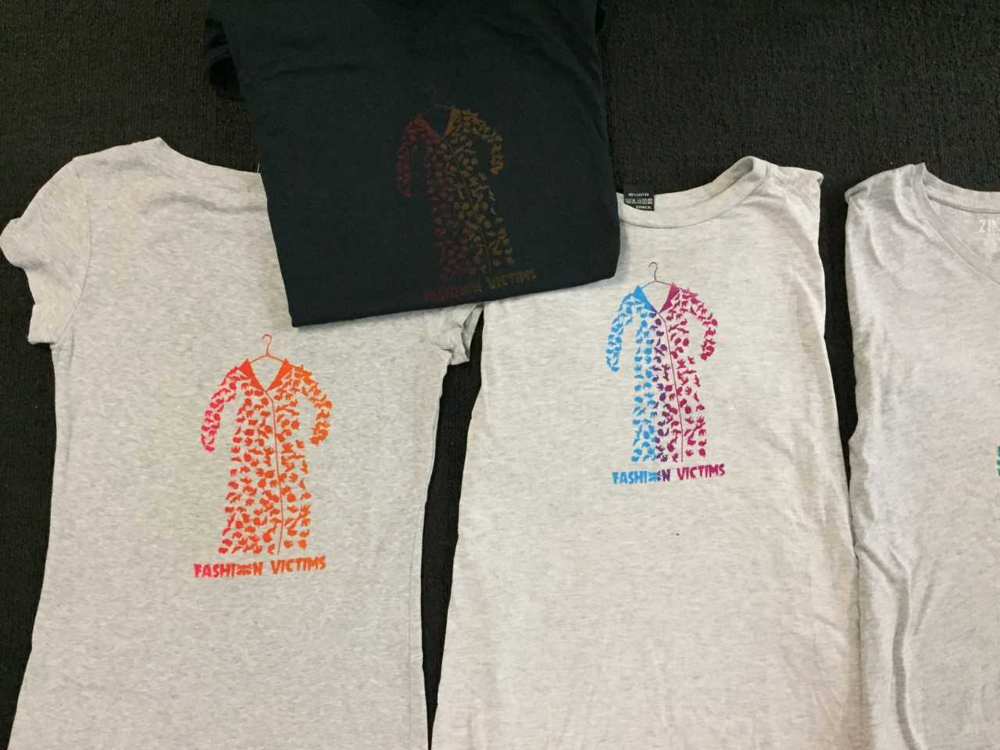
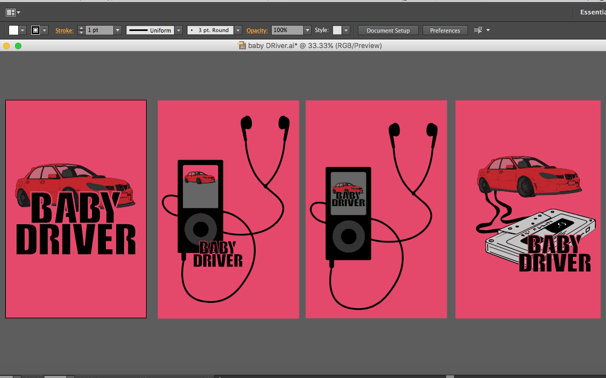
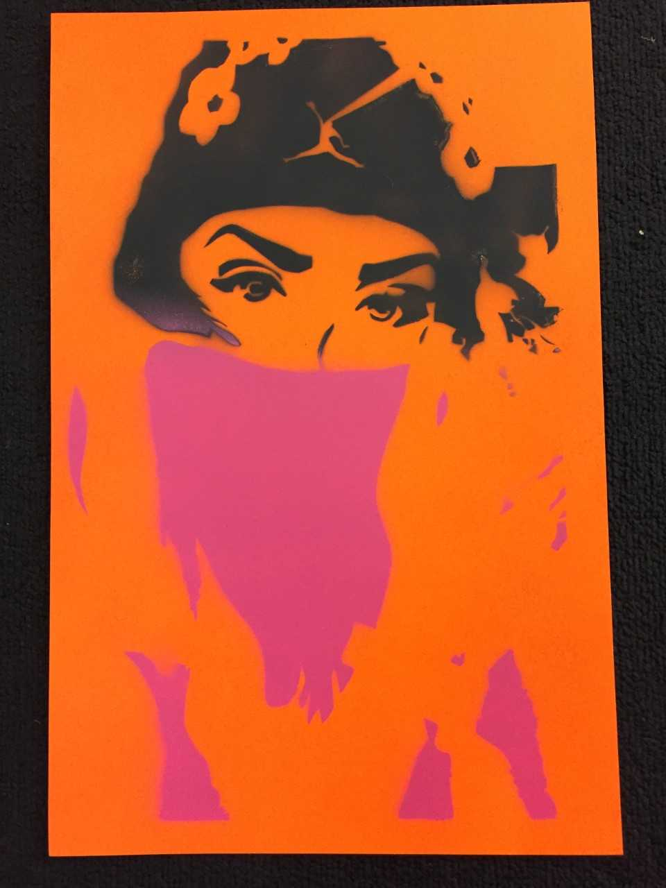
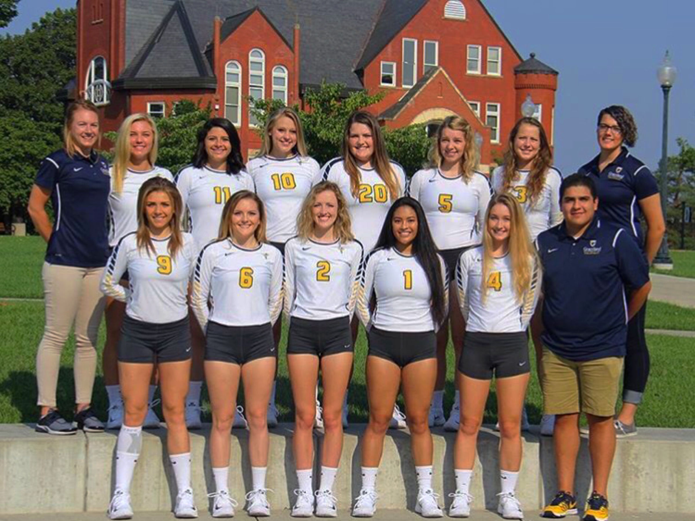

Denislava Velkova
My name is Denislava Velkova and I’m originally from Bulgaria, Sofia which is located in Europe, next to Greece, Turkey, Serbia, and Romania. I came to the United States when I was 16 years old and I graduated High School in Jacksonville, Florida where part of my family lives for more than 25 years. After that I came to Graceland University. I’m currently attending Graceland University and I’m a Junior majoring in Graphic Design. I’m also, playing volleyball at Graceland University. I have earned many volleyball awards such as MVP, Captain of the season, Top setter of the season, All- Tournament player, and Heart of America NAIA. After I graduate I want to play professional volleyball in Europe for couple years and after that I want to continue working in the Graphic Design area and one day have my own company for Graphic Design. I love listening music, being at the gym to work out, and spending time with my family and friends when I have enough time.
Mixed Media Art

Animal Abuse Campaign

Posters and cover books

Stencil Project of me
Experience
As my entry point into Graphic Design, making and creating visual work has been my central skill for the past four years. Recently I have learned my critical and problem-solving skills are also appropriate to my growing interest involvement in Graphic Design, as well as planning and creating. Making flexible, well-organized and easy to use designs is extremely satisfying for me.
I have been working with Adobe Illustrator and Photoshop in my own time for over two years, and creating my own posters, logos, and websites using HTML. During this time I have designed and created several of my own logos, and posters. I also have taken a couple of IT courses and have a great understanding and interest in technology, and the latest trends and innovations. Most of my practice and experience are in mixed media such as graphic design, printmaking, 2- D Design, drawing, sculpture, and 3- D Design. My work is focused on more than one art style. Also, it is simple, clean, meaningful, and balanced.
Sport Involvement

I'm playing volleyball for 13 years. I have been playing in Europe for 10 years, and 3 in America. My position is a setter, the previous season I got many sport awards such as "Heart of America, athletic conference, JV All Tournament", "Top setter of the season", "MVP in Europe in athletic conference", "Top server of the season", etc. I love playing volleyball and after I graduate College I would like to try to play professional in Europe.